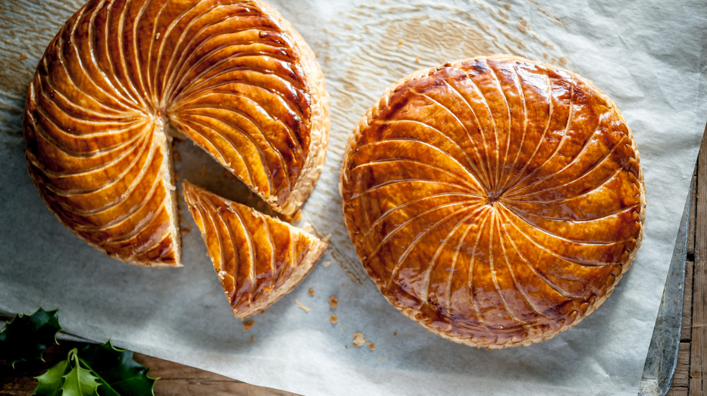

My name is Jason. My hobbies include chess, video games, running, sleeping, sleeping, and sleeping. Also, I like poutine way too much. A website I’m on quite a bit is chess.com. In my opinion, this is the best chess website out there. Some of the video games I play are Valorant, Minecraft, osu!, and there are a lot more that I also enjoy playing. I also sleep way too much. Undisturbed, I can probably sleep for 15-20 hours straight.

I chose Computer Studies 10 because I’ve just recently developed a passion for coding/ computer programming. There also has been a little bit of influence from my brother. I’ve learnt so much more than I would’ve thought in the span of just 2 weeks. For instance, I have learnt how to use the software called GameMaker 8, and we are just starting to learn how to code websites. I have been enjoying GameMaker 8 so far and I am learning new things every day. One day, I hope to be able to make polished, well-made games that could be published, and also make professional looking websites, and eventually, I could hopefully learn different coding languages like JavaScript and Python.
A recipe I decided to chose is a French custard called Frangipane. Frangipane is a sweet almond- flavored custard that can be used as a filling for many deserts, such as the conversation tart and the Bakewell tart. I chose this recipe because in elementary school, we had to make one of these for class, and I had so much fun making it and it also tasted amazing. I don’t really do a lot of baking, but when I do, I enjoy it a lot.
One of the desserts you can use filling for is a desert called Galette des Rois (King’s Cake). Galette des Rois is usually eaten on Fête des Rois, the Sunday after New Year’s where they celebrate Epiphany, the day that baby Jesus was believed to have been visited by the three kings.
